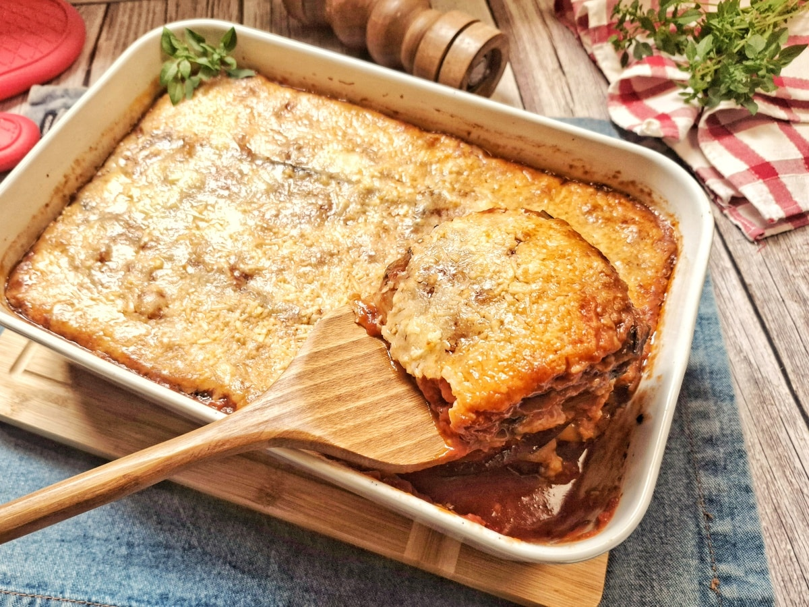

Ingredientes (para 6–8 porções)
- 3 berinjelas médias (cortadas em fatias finas de ~0,5 cm)
- 2 latas de tomate pelado (ou 800 g de molho caseiro)
- 2 dentes de alho picados
- 1 cebola média picada
- Azeite de oliva (para refogar e untar)
- 300–400 g de queijo muçarela ralado (ou mistura com parmesão)
- Sal, pimenta-do-reino e orégano a gosto
- Folhas de manjericão fresco (opcional)
- ½ xícara de água (para o molho)
Modo de Preparo
- Tempere as fatias de berinjela com sal e deixe descansar 20–30 min para soltar o amargor. Enxágue e seque bem.
- Grelhe as fatias em frigideira com azeite até ficarem macias e douradinhas dos dois lados. Reserve.
- Refogue cebola no azeite até ficar transparente, junte o alho e refogue mais 1 min.
- Adicione o tomate pelado amassado (ou molho), a água, sal, pimenta e orégano. Cozinhe 15–20 min até engrossar.
- Monte em refratário untado: camada de molho → berinjela → molho → queijo. Repita 3–4 vezes e finalize com queijo abundante.
- Asse em forno preaquecido a 180–200°C por 25–35 min ou até dourar.
- Deixe descansar 10 min antes de servir. Acompanhe com salada verde.
Dicas importantes
- Grelhar a berinjela evita que a lasanha fique aguada.
- Pode adicionar carne moída ao molho se quiser versão com carne.
- Queijo parmesão ralado por cima dá uma crocância extra.